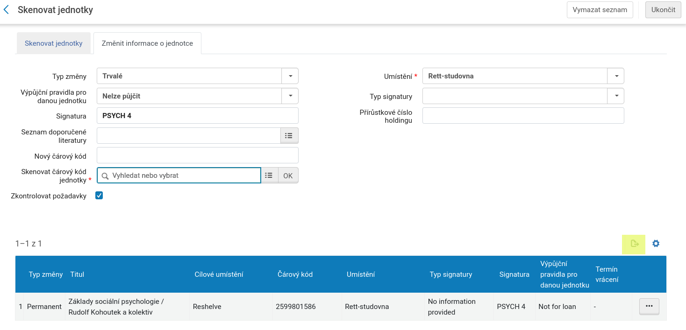

\ProvidesPackage{kniznistitky}
\RequirePackage[cmyk,dvipsnames,x11names,svgnames]{xcolor}
\RequirePackage{graphicx}
\RequirePackage[code=Code39,H=7mm,X=0.2mm]{makebarcode}
\RequirePackage[margin=0pt,paperwidth=8.27in,paperheight=11.69in,top=5mm,bottom=2mm]{geometry}
\RequirePackage{ncccropbox}
\RequirePackage{etoolbox}
\RequirePackage{pict2e}
\ExplSyntaxOn
\newcommand\infobox[2]{\rotatebox{90}{\kern-18pt%
\colorbox{#1}{\vtop to 1.5em{\hbox to \dimexpr 30mm-1pt\relax{\sffamily\Large\hfill\textbf{#2}\hfill}}}}}%
% \#1 Oddíl
% \#2 Poddodíl
% \#3 Počáteční písmena příjmení autora
% \#4 Čárový kód
% \#5 a \#5 Barvy
\def\FirstLetter#1#2;{#1}%
\newcommand\boxik[6]{%
\def\Iniciala{\FirstLetter#3{};}%
\cropbox[69.90mm][32mm]{%\kern 25mm
%\kern-4mm%
\hbox to 3mm{}%
\infobox{#5}{\strut\Iniciala}\infobox{#6}{\strut#2}%\kern 2mm\vbox{%
\parindent=0pt%
\begin{tabular}{l}%
\sffamily\large\bfseries//#1#2/#3\\%
%\vfill%%
\kern-3pt\barcode{#4}\\%
{\small #4}\\%
\end{tabular}%
\hfill\null%
%\bigskip
%\vfill\null
}\BreakBox\newline}
\newcommand\celetnaboxik[6]{%
% \typeout{****************** \detokenize{#1, #2, #3, #4, #5, #6}}%
\def\Iniciala{\FirstLetter#3{};}%
\cropbox[69.90mm][32mm]{\kern 2mm%
\begin{tabular}{l}%
\sffamily\bfseries//#1/#3\\%
%\vfill%%
\kern-3pt\barcode{#4}\\%
{\small #4}\\%
\end{tabular}%
%\kern-4mm%
% \hbox to 3mm{}%
\begin{tabular}{l}%
\infobox{\celetnabackground}{\strut%
\begingroup%
\setlength{\unitlength}{1cm}%
\begin{picture}(0,0)%
\put(0,0.15){\textcolor{\celetnakolecko}{\circle*{1em}}}%
\end{picture}%
\endgroup%
}\\%
\infobox{#5}{\strut#2}\\%
\infobox{#6}{\strut#3}%\kern 2mm\vbox{%
\end{tabular}%
% \parindent=0pt%
% \hfill\null%
%\bigskip
%\vfill\null
}\BreakBox\newline\kern-2pt}%
\newcommand\celetnainfobox[2]{%\rotatebox{90}{\kern-18pt%
\colorbox{#1}{\vtop to 1.2em{\hbox to \dimexpr 24mm-1pt\relax{\sffamily\Large\hfill\textbf{#2}\hfill}}}%
}%
\newcount\BoxBreak
\def\truncdiv#1#2{((#1-(#2-1)/2)/#2)}
\def\moduloop#1#2{(#1-\truncdiv{#1}{#2}*#2)}
\def\modulo#1#2{\number\numexpr\moduloop{#1}{#2}\relax}
\def\BreakBox#1{%
% \advance\BoxBreak by 1\relax%
% \if\modulo\BoxBreak30 #1\fi%
\allowbreak%
}
\def\EmptyBox{\cropbox[69.90mm][32mm]{}\BreakBox{ }}
\newcommand\DefOddil[6]{%
\csgdef{#1}##1##2{\boxik{#2}{#3}{##1}{##2}{#4}{#5}}%
}
\newcommand\oddil[3]{%
\ifcsdef{#1}{%
\csuse{#1}{#2}{#3}%
}{\typeout{\unexpanded{#1}}}%
}%
\def\celetnabackground{white}
\newcommand\celetna[4][\celetnabackground]{%
\begingroup%
\let\boxik\celetnaboxik%
\def\celetnakolecko{#1}%
\let\infobox\celetnainfobox%
\oddil{#2}{#3}{#4}%
\endgroup%
}
\AtBeginDocument{%
\parindent=0pt
}
\ExplSyntaxOff
\input{stitky-oddily}
\endinput
\DefOddil{BIOL}{BIOL}{}{red}{brown}{Biologie}
\DefOddil{CHEM}{CHEM}{}{yellow}{yellow}{Chemie}
\DefOddil{CJ 1}{CJ}{1}{gray}{violet}{Anglický jazyk}
\DefOddil{CJ 2}{CJ}{2}{gray}{violet}{Německý jazyk}
\DefOddil{CJ 3}{CJ}{3}{gray}{violet}{Francouzský jazyk}
\DefOddil{CJ 4}{CJ}{4}{gray}{violet}{Latina}
\DefOddil{CJ 6}{CJ}{6}{gray}{violet}{Ostatní jazyky}
\DefOddil{DID VV}{DID VV}{}{yellow}{brown}{Didaktika výtvarné výchovy}
\DefOddil{DV 1}{DV}{1}{yellow}{brown}{Dramatická výchova}
\DefOddil{DV 2}{DV}{2}{yellow}{brown}{Divadlo}
\DefOddil{DĚJ-OV 1}{DĚJ-OV}{1}{green}{gray}{Světové dějiny}
\DefOddil{DĚJ-OV 2}{DĚJ-OV}{2}{green}{gray}{České dějiny}
\DefOddil{DĚJ-OV 3}{DĚJ-OV}{3}{green}{gray}{Občanská výchova}
\DefOddil{DĚJ-OV 4}{DĚJ-OV}{4}{green}{gray}{Encyklopedie}
\DefOddil{DĚJ-OV 5}{DĚJ-OV}{5}{green}{gray}{Hrady a zámky}
\DefOddil{EKOL}{EKOL}{}{red}{green}{Ekologie}
\DefOddil{EKON}{EKON}{}{white}{green}{Ekonomie}
\DefOddil{FILM}{FILM}{}{yellow}{brown}{Film}
\DefOddil{FILOZOF}{FILOZOF}{}{green}{white}{Filozofie}
\DefOddil{FYZIKA}{FYZIKA}{}{yellow}{green}{Fyzika}
\DefOddil{HV}{HV}{}{green}{brown}{Hudební výchova}
\DefOddil{IKM 1}{IKM}{1}{brown}{yellow}{Informace}
\DefOddil{IKM 2}{IKM}{2}{brown}{yellow}{Média}
\DefOddil{IKM 3}{IKM}{3}{brown}{yellow}{ICT}
\DefOddil{MATEM}{MATEM}{}{green}{green}{Matematika}
\DefOddil{NÁB}{NÁB}{}{white}{blue}{Náboženství}
\DefOddil{PED 1}{PED}{1}{yellow}{Orange}{J. A. Komenský}
\DefOddil{PED 2}{PED}{2}{yellow}{Orange}{Osobnosti pedagogiky}
\DefOddil{PED 3}{PED}{3}{yellow}{Orange}{Univerzita Karlova}
\DefOddil{PED 4}{PED}{4}{yellow}{Orange}{Dějiny pedagogiky}
\DefOddil{PED 5}{PED}{5}{yellow}{Orange}{Slovníky}
\DefOddil{PED 6}{PED}{6}{yellow}{Orange}{Všeobecné učebnice}
\DefOddil{PED 7}{PED}{7}{yellow}{Orange}{České a zahraniční školství}
\DefOddil{PED 8}{PED}{8}{yellow}{Orange}{Řízení a organizace školství}
\DefOddil{PED 9}{PED}{9}{yellow}{Orange}{Předškolní pedagogika}
\DefOddil{POLIT}{POLIT}{0}{green}{gray}{Politologie}
\DefOddil{PSYCH 10}{PSYCH}{10}{red}{red}{Řada Klasici}
\DefOddil{PSYCH 1}{PSYCH}{1}{red}{red}{Obecná psychologie}
\DefOddil{PSYCH 2}{PSYCH}{2}{red}{red}{Vývojová psychologie}
\DefOddil{PSYCH 3}{PSYCH}{3}{red}{red}{Dějiny psychologie}
\DefOddil{PSYCH 4}{PSYCH}{4}{red}{red}{Sociální psychologie}
\DefOddil{PSYCH 5}{PSYCH}{5}{red}{red}{Psychologie osobnosti}
\DefOddil{PSYCH 6}{PSYCH}{6}{red}{red}{Psychopatologie, klinická psychologie}
\DefOddil{PSYCH 7}{PSYCH}{7}{red}{red}{Poradenství, psychoterapie}
\DefOddil{PSYCH 8}{PSYCH}{8}{red}{red}{Pedagogická psychologie}
\DefOddil{PSYCH 9}{PSYCH}{9}{red}{red}{Ostatní}
\DefOddil{RELAX}{RELAX}{}{white}{white}{}
\DefOddil{RJaLIT 1}{RJaLIT}{1}{white}{violet}{Ruský jazyk -- literatura}
\DefOddil{RJaLIT 2}{RJaLIT}{2}{white}{violet}{Ruský jazyk -- gramatika}
\DefOddil{RJaLIT 3}{RJaLIT}{3}{white}{violet}{Ruský jazyk -- slovníky}
\DefOddil{SOCIOL}{SOCIOL}{}{red}{red}{Sociologie}
\DefOddil{SOCIOL 1}{SOCIOL}{}{red}{red}{Sociologie}
\DefOddil{SPPG 10}{SPPG}{10}{violet}{red}{Autismus, afázie}
\DefOddil{SPPG 11}{SPPG}{11}{violet}{red}{Pediatrie}
\DefOddil{SPPG 12}{SPPG}{12}{violet}{red}{Sociální problémy, rodina}
\DefOddil{SPPG 13}{SPPG}{13}{violet}{red}{Slovníky, všeobecné učebnice}
\DefOddil{SPPG 2}{SPPG}{2}{violet}{red}{Psychopedie}
\DefOddil{SPPG 3}{SPPG}{3}{violet}{red}{Tyflopedie}
\DefOddil{SPPG 4}{SPPG}{4}{violet}{red}{Surdopedie}
\DefOddil{SPPG 5}{SPPG}{5}{violet}{red}{Dysgrafie, dyslexie, logopedie}
\DefOddil{SPPG 6}{SPPG}{6}{violet}{red}{Patopsychologie}
\DefOddil{SPPG 7}{SPPG}{7}{violet}{red}{Somatopedie}
\DefOddil{SPPG 8}{SPPG}{8}{violet}{red}{Etopedie}
\DefOddil{SPPG 9}{SPPG}{9}{violet}{red}{Lehké mozkové dysfunkce}
\DefOddil{TV}{TV}{}{brown}{violet}{Tělesná výchova}
\DefOddil{U-SŠaUŠ 10}{U-SŠaUŠ}{10}{yellow}{blue}{Cizí jazyky (SŠ)}
\DefOddil{U-SŠaUŠ 11}{U-SŠaUŠ}{11}{yellow}{blue}{Biologie (SŠ)}
\DefOddil{U-SŠaUŠ 12}{U-SŠaUŠ}{12}{yellow}{blue}{Hudební výchova (SŠ)}
\DefOddil{U-SŠaUŠ 1}{U-SŠaUŠ}{1}{yellow}{blue}{Literatura (SŠ)}
\DefOddil{U-SŠaUŠ 2}{U-SŠaUŠ}{2}{yellow}{blue}{Český jazyk (SŠ)}
\DefOddil{U-SŠaUŠ 3}{U-SŠaUŠ}{3}{yellow}{blue}{Občanská výchova (SŠ)}
\DefOddil{U-SŠaUŠ 4}{U-SŠaUŠ}{4}{yellow}{blue}{Matematika (SŠ)}
\DefOddil{U-SŠaUŠ 5}{U-SŠaUŠ}{5}{yellow}{blue}{Chemie (SŠ)}
\DefOddil{U-SŠaUŠ 6}{U-SŠaUŠ}{5}{yellow}{blue}{}
\DefOddil{U-SŠaUŠ 7}{U-SŠaUŠ}{7}{yellow}{blue}{Dějepis (SŠ)}
\DefOddil{U-SŠaUŠ 8}{U-SŠaUŠ}{8}{yellow}{blue}{Zeměpis (SŠ)}
\DefOddil{U-SŠaUŠ 9}{U-SŠaUŠ}{9}{yellow}{blue}{Fyzika (SŠ)}
\DefOddil{U-ZVLŠ}{U-ZVLŠ}{}{yellow}{blue}{Učebnice pro zvláštní školy}
\DefOddil{U-ZŠ 10}{U-ZŠ}{10}{yellow}{blue}{Dějepis}
\DefOddil{U-ZŠ 11}{U-ZŠ}{11}{yellow}{blue}{Vlastivěda (ZŠ)}
\DefOddil{U-ZŠ 12}{U-ZŠ}{12}{yellow}{blue}{Zeměpis (ZŠ)}
\DefOddil{U-ZŠ 13}{U-ZŠ}{13}{yellow}{blue}{Sbírky úloh (ZŠ)}
\DefOddil{U-ZŠ 14}{U-ZŠ}{14}{yellow}{blue}{Matematika (ZŠ)}
\DefOddil{U-ZŠ 15}{U-ZŠ}{15}{yellow}{blue}{Fyzika (ZŠ)}
\DefOddil{U-ZŠ 16}{U-ZŠ}{16}{yellow}{blue}{Chemie (ZŠ)}
\DefOddil{U-ZŠ 17}{U-ZŠ}{17}{yellow}{blue}{Přírodopis (ZŠ)}
\DefOddil{U-ZŠ 18}{U-ZŠ}{18}{yellow}{blue}{Prvouka (ZŠ)}
\DefOddil{U-ZŠ 19}{U-ZŠ}{19}{yellow}{blue}{Cizí jazyky (ZŠ)}
\DefOddil{U-ZŠ 1}{U-ZŠ}{1}{yellow}{blue}{Čítanky (ZŠ)}
\DefOddil{U-ZŠ 2}{U-ZŠ}{2}{yellow}{blue}{Literární výchova (ZŠ)}
\DefOddil{U-ZŠ 3}{U-ZŠ}{3}{yellow}{blue}{Český jazyk (ZŠ)}
\DefOddil{U-ZŠ 4}{U-ZŠ}{4}{yellow}{blue}{Slabikáře a čítanky (ZŠ)}
\DefOddil{U-ZŠ 5}{U-ZŠ}{5}{yellow}{blue}{Český jazyk - pravopis (ZŠ)}
\DefOddil{U-ZŠ 6}{U-ZŠ}{6}{yellow}{blue}{Hudební výchova (ZŠ)}
\DefOddil{U-ZŠ 7}{U-ZŠ}{7}{yellow}{blue}{Rodinná výchova, technické a pěstitelské práce (ZŠ)}
\DefOddil{U-ZŠ 8}{U-ZŠ}{8}{yellow}{blue}{Výtvarná výchova (ZŠ)}
\DefOddil{U-ZŠ 9}{U-ZŠ}{9}{yellow}{blue}{Občanská výchova (ZŠ)}
\DefOddil{VV 1}{VV}{1}{yellow}{brown}{Umění a design}
\DefOddil{VV 2}{VV}{2}{yellow}{brown}{České umění}
\DefOddil{VV 3}{VV}{3}{yellow}{brown}{Typografie}
\DefOddil{VV 4}{VV}{4}{yellow}{brown}{Architektura}
\DefOddil{VV 5}{VV}{5}{yellow}{brown}{Světové umění}
\DefOddil{VV 7}{VV}{7}{yellow}{brown}{Pragensie}
\DefOddil{ZDRAV-BIOL}{ZDRAV-BIOL}{}{green}{purple}{Zdravověda, biologie člověka}
\DefOddil{ZEM}{ZEM}{}{white}{white}{Zeměpis}
\DefOddil{ZÁV-PRÁCE}{ZÁV-PRÁCE}{}{white}{white}{Závěrečné práce}
\DefOddil{ČJaLIT 2}{ČJaLIT}{2}{violet}{violet}{Mluvnice}
\DefOddil{ČJaLIT 3}{ČJaLIT}{3}{violet}{violet}{Pravopis}
\DefOddil{ČJaLIT 4}{ČJaLIT}{4}{violet}{violet}{Jazykověda}
\DefOddil{ČJaLIT 5}{ČJaLIT}{5}{violet}{violet}{Stylistika}
\DefOddil{ČJaLIT 6}{ČJaLIT}{6}{violet}{violet}{Literatura}
\DefOddil{ČJaLIT 8}{ČJaLIT}{8}{violet}{gray}{Jazykověda -- slovníky}
\DefOddil{ČJaLIT 9}{ČJaLIT}{9}{violet}{gray}{Literatura -- slovníky}
\DefOddil{01/CHILD}{01/CHILD}{}{red}{BlueViolet}{}
\DefOddil{02/LITHCR}{02/LITHCR}{}{LimeGreen}{Goldenrod}{}{}
\DefOddil{03/BRFICT}{03/BRFICT}{}{LimeGreen}{LimeGreen}{}
\DefOddil{04/AMFICT}{04/AMFICT}{}{BlueViolet}{BlueViolet}{}
\DefOddil{05/POET}{05/POET}{}{gray}{Cyan3}{}
\DefOddil{06/BRPOET}{06/BRPOET}{}{gray}{LimeGreen}{}
\DefOddil{07/AMPOET}{07/AMPOET}{}{gray}{BlueViolet}{}
\DefOddil{08/LITHIS}{08/LITHIS}{}{gray}{lightgray}{}
\DefOddil{09/BRISTU}{09/BRISTU}{}{LimeGreen}{Chocolate4}{}
\DefOddil{10/AMSTU}{10/AMSTU}{}{BlueViolet}{Chocolate4}{}
\DefOddil{11/DRAMA}{11/DRAMA}{D}{red}{red}{}
\DefOddil{12/SPEAK}{12/SPEAK}{S}{red}{red}{}
\DefOddil{13/LIST}{13/LIST}{L}{red}{red}{}
\DefOddil{14/WRITE}{14/WRITE}{W}{red}{red}{}
\DefOddil{15/READ}{15/READ}{}{red}{LimeGreen}{}
\DefOddil{16/METOD}{16/METOD}{}{Goldenrod}{Chocolate4}{}
\DefOddil{17/GRAM}{17/GRAM}{}{red}{gray}{}
\DefOddil{18/GAME}{18/GAME}{}{red}{Cyan3}{}
\DefOddil{19/TEXT}{19/TEXT}{}{Goldenrod}{Goldenrod}{}
\DefOddil{20/ENGL}{20/ENGL}{}{Cyan3}{Chocolate4}{}
\DefOddil{21/LING}{21/LING}{}{Chocolate4}{red}{}
\DefOddil{22/VOCAB}{22/VOCAB}{}{red}{Goldenrod}{}
\DefOddil{23/PHON}{23/PHON}{}{gray}{Chocolate4}{}
\DefOddil{24/GEND}{24/GEND}{}{BlueViolet}{Goldenrod}{}
\DefOddil{25/NEWZW}{25/NEWZE}{}{Cyan3}{Cyan3}{}
\DefOddil{26/AUSTLI}{26/AUSTLI}{}{Chocolate4}{Chocolate4}{}
\DefOddil{27/DICT}{27/DICT}{}{Cyan3}{white}{}
\DefOddil{28/ENCYCL}{28/ENCYCL}{}{BlueViolet}{white}{}
\DefOddil{32/POSTC}{32/POSTC}{}{LimeGreen}{Cyan3}{}
\DefOddil{31/MISC}{31/MISC}{}{white}{white}{}
\DefOddil{De/A1}{De/A1}{A1}{Goldenrod}{Goldenrod}{}
\DefOddil{De/A2}{De/A2}{A2}{Goldenrod}{Goldenrod}{}
\DefOddil{De/B1}{De/B1}{B1}{Goldenrod}{Goldenrod}{}
\DefOddil{De/B2}{De/B2}{B2}{Goldenrod}{Goldenrod}{}
\DefOddil{De/C1}{De/C1}{C1}{Goldenrod}{Goldenrod}{}
\DefOddil{De/C2}{De/C2}{C2}{Goldenrod}{Goldenrod}{}
\DefOddil{De/C3}{De/C3}{C3}{Goldenrod}{Goldenrod}{}
\DefOddil{De/D1}{De/D1}{D1}{Goldenrod}{Goldenrod}{}
\DefOddil{De/D2}{De/D2}{D2}{Goldenrod}{Goldenrod}{}
\DefOddil{De/E}{De/E}{E}{Goldenrod}{Goldenrod}{}
\DefOddil{De/F}{De/F}{F}{Goldenrod}{Goldenrod}{}
\DefOddil{De/G}{De/G}{G}{Goldenrod}{Goldenrod}{}
\DefOddil{De/H}{De/H}{H}{Goldenrod}{Goldenrod}{}
\DefOddil{De/O}{De/O}{O}{Goldenrod}{Goldenrod}{}
\DefOddil{Ru/A1}{Ru/A1}{A1}{Cyan3}{Cyan3}{}
\DefOddil{Ru/A2}{Ru/A2}{A2}{Cyan3}{Cyan3}{}
\DefOddil{Ru/B1}{Ru/B1}{B1}{Cyan3}{Cyan3}{}
\DefOddil{Ru/C1}{Ru/C1}{C1}{Cyan3}{Cyan3}{}
\DefOddil{Ru/D1}{Ru/D1}{D1}{Cyan3}{Cyan3}{}
\DefOddil{Ru/E}{Ru/E}{E}{Cyan3}{Cyan3}{}
\DefOddil{Ru/F}{Ru/F}{F}{Cyan3}{Cyan3}{}
\DefOddil{Ru/G}{Ru/G}{G}{Cyan3}{Cyan3}{}
\DefOddil{Ru/H}{Ru/H}{H}{Cyan3}{Cyan3}{}
\documentclass{article}
\usepackage{kniznistitky}
\usepackage{fontspec}
\setmainfont{Arial}
\setsansfont{Arial}
\begin{document}
{{content}}
\end{document}
Tvorba druhých signatur
Načíst data
Generovat PDF
Tento formulář vytvoří štítky pro polepení knížek ve studovnách. Po tom, co změníte lokace a nastavíte druhé signatury ve skenování jednotek v Almě, stáhněte XLSX soubor (zvýrazněná ikonka na obrázku) a data z něj zkopírujte do vstupního políčka.
